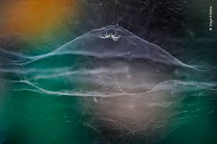
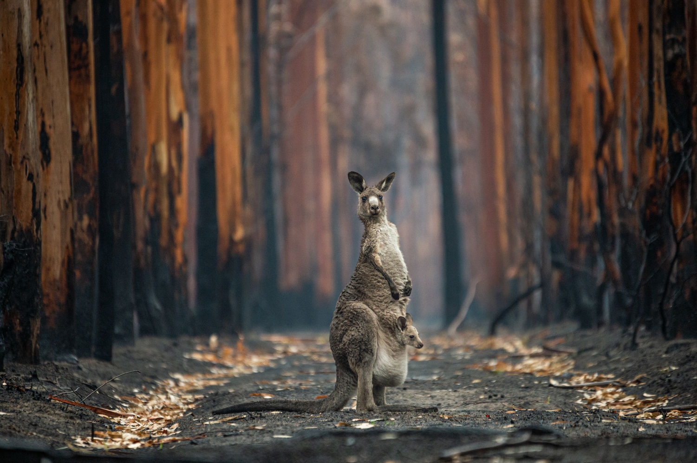
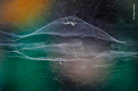
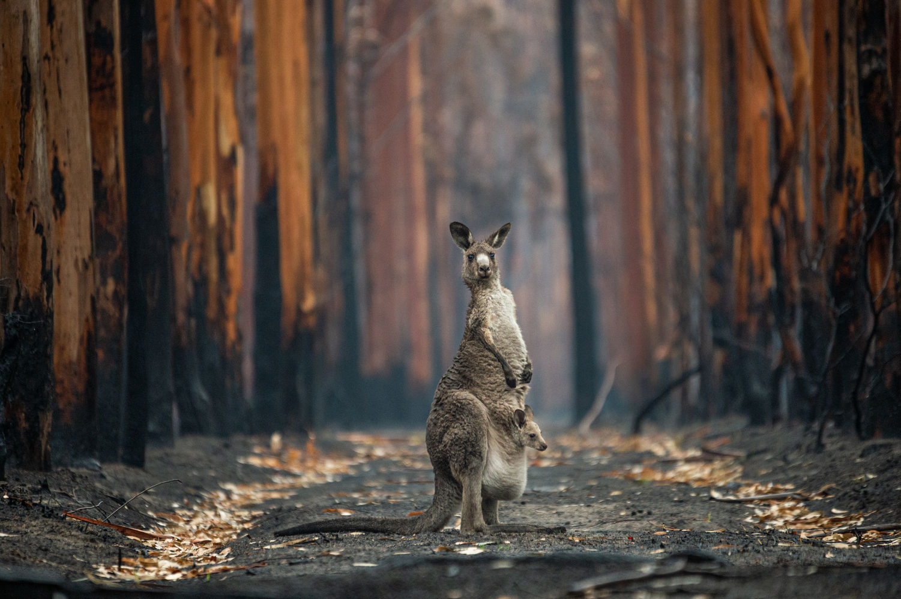

The millions of different species on our planet are essential for so many of the most important things in
our
lives.
This complex web of life provides the natural systems we depend on – from clean air and water to fertile
soils
and a stable climate.
It gives us food, medicines and materials, and supports millions of jobs.
And it also inspires us, making our lives richer in so many ways.
But our planet’s wildlife is in crisis – numbers have fallen by more than half since 1970, and species are
becoming extinct at an alarming rate.
We need to reverse this loss of nature and create a future where wildlife and people thrive again.


 


